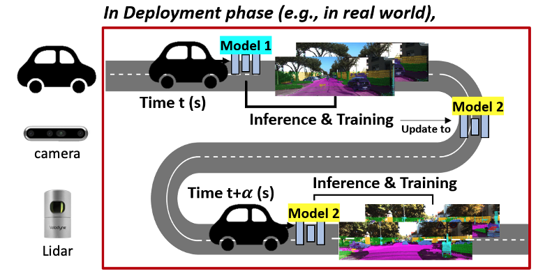
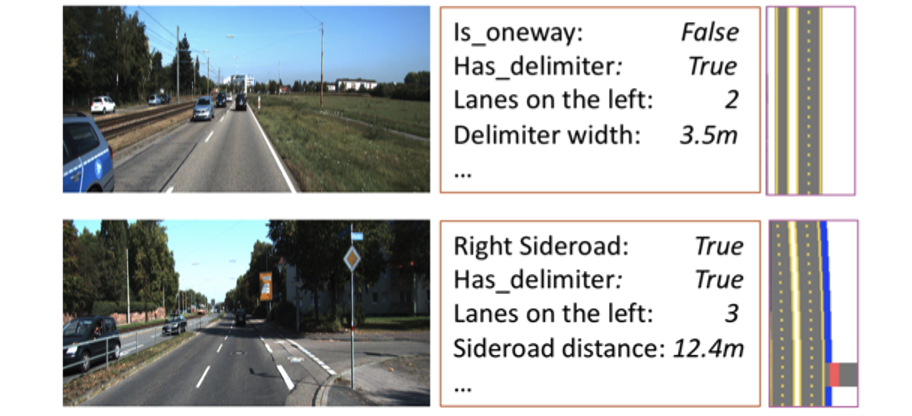
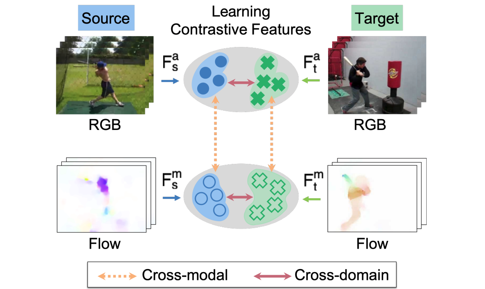

Bingbing Zhuang
I am currently a computer vision and machine learning engineer at Apple, conducting research and development in 3D vision for next-generation products. Before, I was a senior researcher at NEC Laboratories America, headed by Manmohan Chandraker. I graduated from National Univeristy of Singapore with Ph.D. degree in 2019, advised by Loong Fah Cheong and Gim Hee Lee. I obtained my Bachelor's degree at University of Science and Technology of China (USTC) in 2015.
[Google Scholar] [LinkedIn]Email: bingbingzhg@gmail.com
Research Interest
3D Computer Vision in general, 3D reconstruction and generation, Neural Rendering, 3D perception, Structure-from-Motion.
Publications

|
Drive-1-to-3: Enriching Diffusion Priors for Novel View Synthesis
of Real Vehicles
Chuang Lin, Bingbing Zhuang, Shanlin Sun, Ziyu Jiang, Jianfei Cai, Manmohan Chandraker Arxiv, 2024 [PDF] [Project Page] |

|
LidaRF: Delving into Lidar for Neural Radiance Field on Street Scenes
Shanlin Sun, Bingbing Zhuang, Ziyu Jiang, Buyu Liu, Xiaohui Xie, Manmohan Chandraker CVPR Data-Driven Autonomous Driving Simulation Workshop, 2024 (Oral) CVPR, 2024 (Highlight) [PDF] [Project Page] [bibtex] A Lidar-enhanced neural radiance field to transform drive videos into photorealistic sensor simulation testbeds. |

|
Instantaneous Perception of Moving Objects in 3D
Di Liu, Bingbing Zhuang, Dimitris N. Metaxas, Manmohan Chandraker CVPR, 2024 [PDF] [Video] [bibtex] Instantaneous subtle motion detection and estimation for vehicles in street scene. |
|
|
LDP-FEAT: Image Features with Local Differential Privacy
Francesco Pittaluga , Bingbing Zhuang ICCV, 2023 [PDF] [bibtex] Image features with differential privacy guarantee for visual localization and structure-from-motion. |

|
NeurOCS: Neural NOCS Supervision for Monocular 3D Object Localization
Zhixiang Min, Bingbing Zhuang, Samuel Schulter, Buyu Liu, Enrique Dunn, Manmohan Chandrake CVPR, 2023 [PDF] [Supplementary] [Video Talk] [bibtex] Revisiting NOCS-based 3D object detection and localization in driving scenes with categorical object NeRF. |
|
 |
MM-TTA: Multi-Modal Test-Time Adaptation for 3D Semantic Segmentation Inkyu Shin, Yi-Hsuan Tsai, Bingbing Zhuang, Samuel Schulter, Buyu Liu, Sparsh Garg, In So Kweon, Kuk-Jin Yoon CVPR, 2022 [PDF] [Project Page] [bibtex] Test-time domain adapation for 3D semantic segmentation leveraging image-Lidar cross-modal consistency. |
|
 |
Weakly But Deeply Supervised Occlusion-Reasoned Parametric Road Layouts Buyu Liu, Bingbing Zhuang, Manmohan Chandraker CVPR, 2022 [PDF] [bibtex] Geometric transformation creates dense occlusion-aware semantic map from compact parametric annotation, facilitating road layout estimation. |
|
 |
Learning Cross-Modal Contrastive Features for Video Domain Adaptation
Donghyun Kim, Yi-Hsuan Tsai, Bingbing Zhuang, Xiang Yu, Stan Sclaroff, Kate Saenko, Manmohan Chandraker ICCV, 2021 [PDF] [Supplementary] [bibtex] A cross-domain and cross-modal (geometry and appearance) constrastive learning framework for video domain adpatation. |

|
Fusing the Old with the New: Learning Relative Camera Pose with Geometry-guided Uncertainty
Bingbing Zhuang, Manmohan Chandraker CVPR, 2021 (Oral Presentation) [PDF] [Supplementary] [5-min Talk] [bibtex] A principled way to fuse the geometric camera pose estimation with CNN predictions, via learning geometry-guided uncertainty, driven by a self-attention graph neural network. |

|
Pseudo RGB-D for Self-Improving Monocular SLAM and Depth Prediction Lokender Tiwari, Pan Ji, Quoc-Huy Tran, Bingbing Zhuang, Saket Anand, Manmohan Chandraker ECCV, 2020 [PDF] [Project Page] [1-min Talk] [bibtex] Geometric SLAM and self-supervised monocular CNN-depth learning can benefit each other. |
|
|
Image Stitching and Rectification for Hand-Held Cameras Bingbing Zhuang, Quoc-Huy Tran. ECCV, 2020 [PDF] [Project Page] [1-min Talk] [bibtex] Joint rolling shutter image stitching and distortion removal, by deriving a new rolling-shutter-aware homography and a minimal 5-point solver. |
|
|
Understanding Road Layout from Videos as a Whole Buyu Liu, Bingbing Zhuang, Samuel Schulter, Pan Ji, Manmohan Chandraker. CVPR, 2020 [PDF] [Supplementary] [bibtex] Learning parametric road layout from non-parametric semantic 3D reconstruction obtained by Structure-from-Motion. |
|
|
Learning Structure-and-Motion-Aware Rolling Shutter Correction Bingbing Zhuang, Quoc-Huy Tran, Pan Ji, Loong Fah Cheong, Manmohan Chandraker. CVPR, 2019 (Oral Presentation) [PDF] [Project Page] [bibtex] Theoretical degeneracy on SfM with a rolling-shutter camera and leveraging data-driven priors through a network that learns camera motion and scene structure to undistort a single rolling shutter image. |
|
|
Degeneracy in Self-Calibration Revisited and a Deep Learning Solution for Uncalibrated SLAM Bingbing Zhuang, Quoc-Huy Tran, Gim Hee Lee, Loong Fah Cheong, Manmohan Chandraker. IROS, 2019 [PDF] [YouTube Video] [Project Page] [bibtex] Theoretical degeneracy on radial distortion self-calibration in forward motion and a network to learn radial distortion parameters and camera intrinsics for SLAM. |
|
|
Baseline Desensitizing In Translation Averaging Bingbing Zhuang, Loong Fah Cheong, Gim Hee Lee CVPR, 2018 [PDF] [Supplementary] [Code] [bibtex] Remark: This method has been integrated as a part of GOLMAP A baseline-insensitive bilinear objective function for translation averaging in global SfM. Theoretically revealing the underlying subtle difference that leads to the performance gap between two convex methods, LUD and Shapefit/kick. |

|
Rolling-Shutter-Aware Differential SfM and Image Rectification Bingbing Zhuang, Loong Fah Cheong, Gim Hee Lee ICCV, 2017 [PDF] [Supplementary] [Dataset] [bibtex] See C++ Code reimplemented by Felix Graule et al. as a 3D Vision Course Project in ETH Zurich Develop a rolling-shutter-aware differential SfM method for depth and motion recovery, which is further leveraged to remove rolling shutter distortion. |
Professional Services
Conference Reviewer: CVPR, ICCV, ECCV, NeurIPS, ICML, ICLR, ICRA, IROS, 3DV, AAAI, WACV, ACCV, BMVC, ICPR, ACMMM
Journal Reviewer: TPAMI, TIP, RA-L